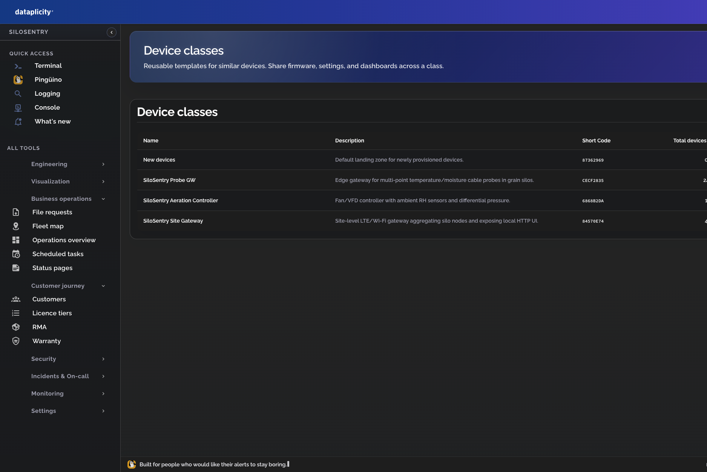
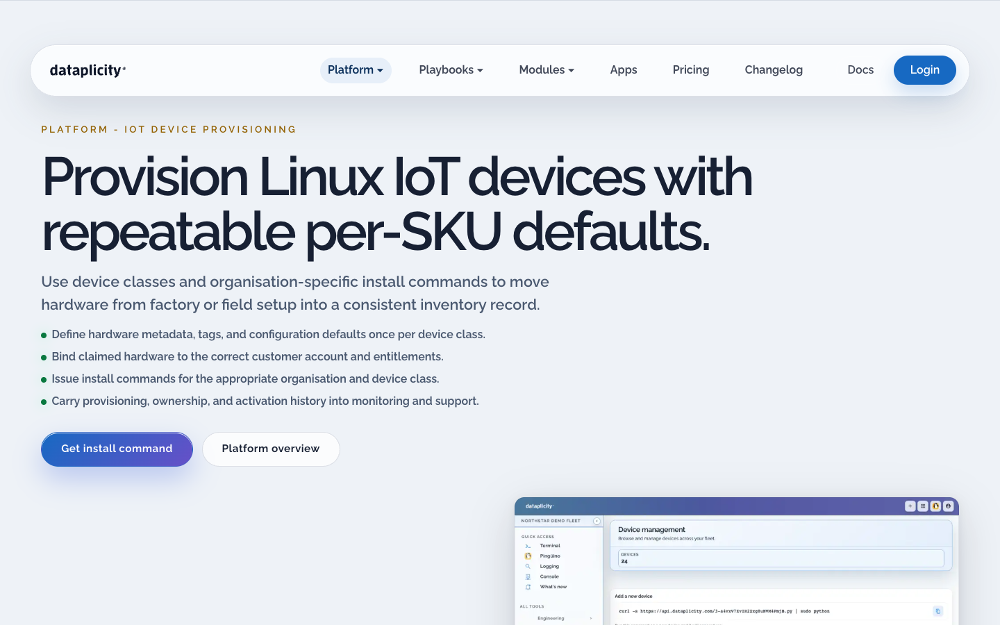
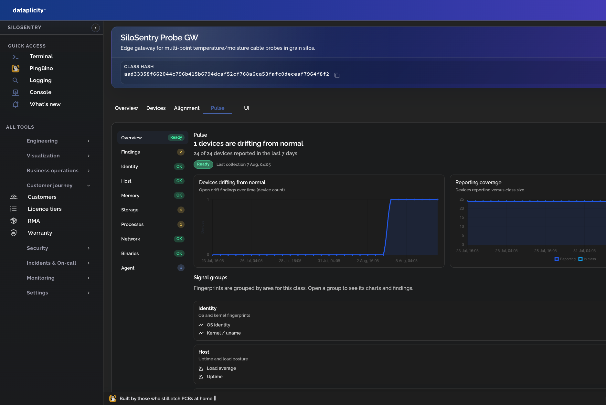
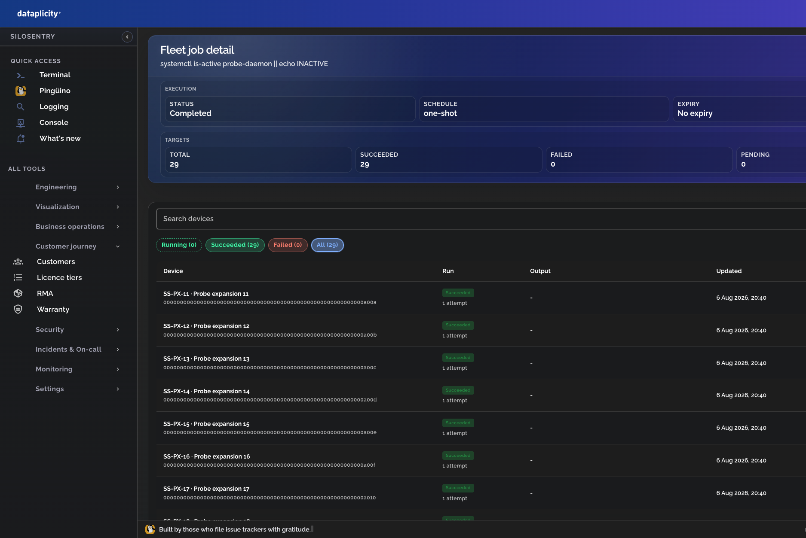
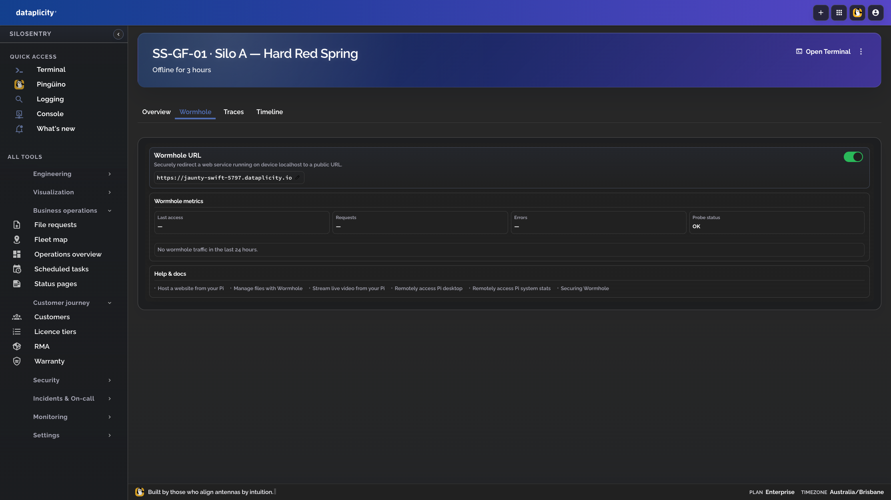
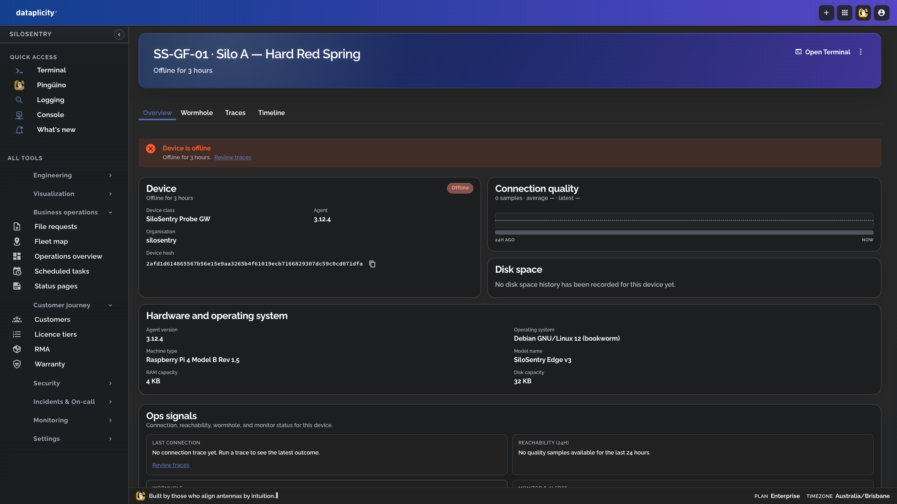
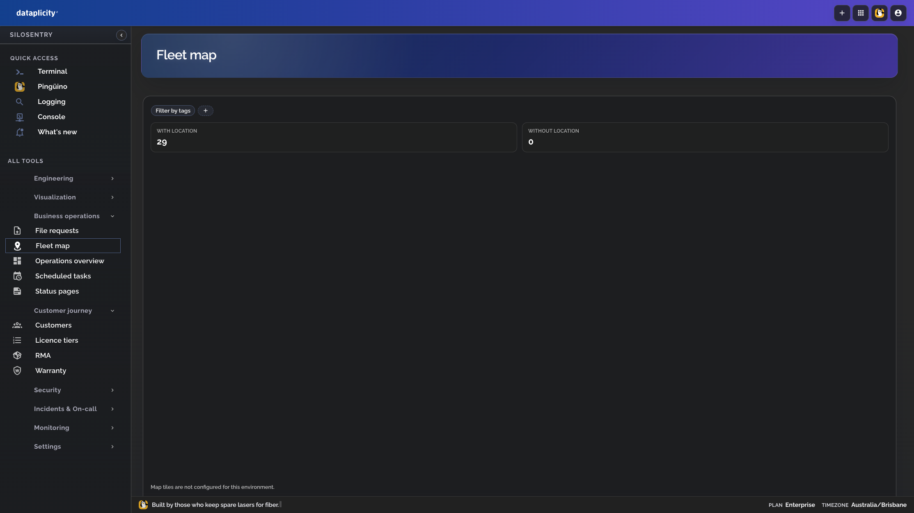

Their cloud
app.silosentry.com
Where customers see grain data and where SiloSentry bills. Domain software — not Dataplicity.
Illustrative project · Not a real company
You’re looking inside a working IoT company that ships Linux gateways into grain elevators — and runs them afterward on Dataplicity. The useful part isn’t the SKU list. It’s how the fleet progresses: what “normal” looks like for a class, when a device drifts, and how ops acts.
SiloSentry is made-up but operated like a real Dataplicity org: co-op Networks, device classes for SKUs, Device Class Pulse fingerprints over time, and fleet jobs when someone needs the same command across many boxes. Screenshots are from a local demo of that org — not a product pitch deck.
Inside the company
Co-ops buy gateways and a cloud app for temperature and moisture. SiloSentry’s ops team lives in Dataplicity: which elevator, which SKU, who’s online, what’s drifted, what ran last week.
app.silosentry.com
Where customers see grain data and where SiloSentry bills. Domain software — not Dataplicity.
control plane
Provision, presence, Pulse, fleet jobs, Wormhole, terminal, alerts. How the company keeps shipping hardware supportable.



Device Class Pulse
For SiloSentry’s Probe GW class, Pulse fingerprints OS, processes, disk, agent version, and more.
Over days you get a progression story: coverage stays high, then one tower drifts when
probe-daemon disappears and root disk climbs. That’s how ops understands fleet change without SSHing every box.


Fleet jobs
SiloSentry doesn’t fix Tower 2 by emailing a field tech a shell one-liner twenty-nine times. Fleet jobs carry the same command to selected devices with retries and history — harvest readiness sweeps, log vacuums after disk pressure, restarts after Pulse drift.


systemctl is-active probe-daemon across critical bins — one job, one history.
Site gateways get a journal vacuum after Pulse / alerts show fill climbing.
Pulse flags Tower 2 → fleet job restarts probe-daemon on that device set.
When one box needs a human
Fleet tools handle the many. For the one gateway that’s stuck, SiloSentry still opens the device-local admin over HTTPS or drops to a browser shell — still without a truck roll or a public IP.



In practice
Open the class. Coverage is full. One device drifted three days ago — probe-daemon gone, disk high.
Restart probe-daemon on that tower (or the readiness sweep if harvest is close). Watch per-device results.
If the job fails, Wormhole / terminal on that one box. File request if a tech is already on site.
New Probe GWs join the class. Pulse folds them into “normal.” The progression story continues.



Takeaway
Class = SKU. Network = site. Pulse = how the fleet changed. Fleet jobs = how you act on many. Wormhole and terminal = how you finish the one that won’t cooperate.
Ship → learn class normal → watch drift over time → run jobs → break-glass on the leftover.
Explore Dataplicity if you’re shipping Linux devices that still need a support loop after they leave the factory.